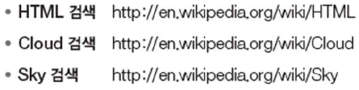
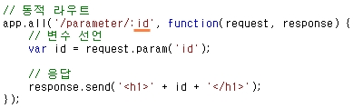
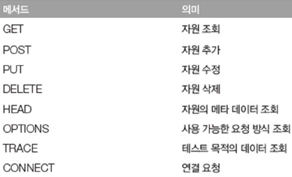
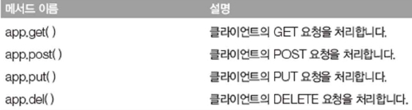

postman 크롬 확장 프로그램은 HTTP 요청을 수행하는 프로그램입니다.
Postman을 사용하면 손쉽게 HTTP 요청을 수행할 수 있습니다.
클라이언트가 서버로 어떻게 데이터를 전달하는지 직접 확인하기
http://search.daum.net/search?nil_suggest=btn&nil_ch=&rtupcoll=&w=tot&m=&f=&lpp=&DA=SBCO&sug=&sq=&o=&sugo=&q=html5
=> http://주소/경로?키A=값A&키B=값B
* 다음 검색의 요청 매개변수
클라이언트가 서버로 전달하는 데이터를 "요청 매개변수"라 한다.
* param( ) 메서드
- 일반 요청 매개변수는 위에서 살펴본 다음 검색처럼 '키=값' 블록으로 데이터를 전달하는 방법이다.
* 요청 매개변수 확인
- 먼저 명령 프롬프트 창에서 서버를 실행한다.
- 아래의 주소를 postman의 URL에 입력하여 결과를 확인한다.
- '키=값' 형태의 요청 매개변수를 사용하는 것이 아닌 경로에 직접 입력하는 방식이다.
- 동적 라우트 : 동적으로 변할수 있는 부분을 처리하는 라우트
- 먼저 명령 프롬프트 창에서 서버를 실행한다.
- 아래의 주소를 postman의 URL에 입력하여 결과를 확인한다.
<요청 방식>
<요청 방식 처리 메서드>
